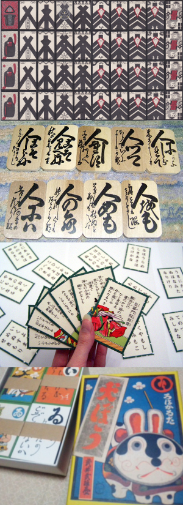
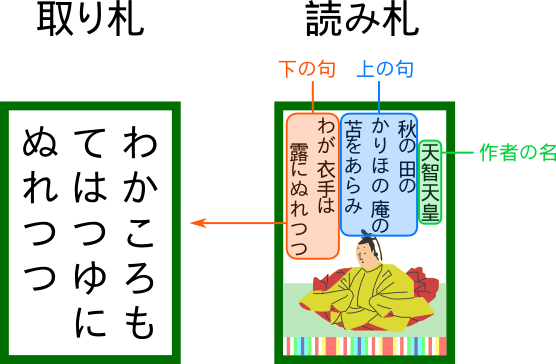

かるた

from top to bottom:
株札[2]
下の句かるた[3]
歌がるた[4]
いろはかるた[5]
Wikipedia [ja|en|de] 「かるた」 is a loanword from Portuguese (“carta”) and a term used to describe several types of Japanese card games. Compared to western type playing cards (known in Japan as 「トランプ」) the cards of かるた-type games are usually a bit thicker (image[1]). Aside from the basic appearance of cards, games that fall under the category かるた differ in many aspects. This page will focus on a class of games based on the principle of matching: - there are two sets of cards A, B - each card in set A has a matching card in set B - given some information based on a card from set A the goal is to identify the matching card from set B - the class can further be divided into 歌がるた and いろははるた Games referred to as かるた that do not belong to above class are listed on this page under その他 (“others”). Image sources: [1] ouji-day.jugem.jp [2] commons.wikimedia.org [3] photozou.jp [4] photozou.jp [5] commons.wikimedia.org Note: This page will be riddled with Japanese words since ローマ字 are evil.
歌がるた

licence: CC BY-SA; author: Tarek Saier

{kind=link}
{kind=link}
{kind=link}
リレーかるた
Wikipedia [ja|en|de] - baz - bam
下の句かるた
Wikipedia [ja|en|de] - baz - bam
逆さまかるた
Wikipedia [ja|en|de] - baz - bam
宗春かるた
Wikipedia [ja|en|de] - baz - bam